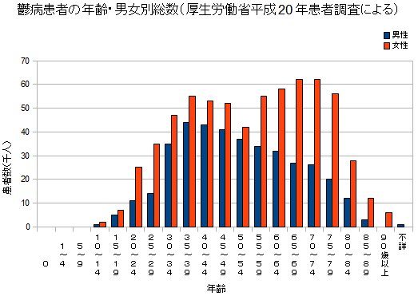

うつ病患者の総数が100万人を超えていたことが明らかに 120
ストーリー by hylom
男女の傾向差も気になるところ 部門より
男女の傾向差も気になるところ 部門より
kieru_haim 曰く、
うつなどの症状が続くうつ病の患者数（躁うつ病を含む）が、初めて100万人を超えたことが3日、厚生労働省が３年ごとに実施している患者調査で分かったそうです（読売新聞の記事）。
個人的に気になってくるのが「業種別に見た場合」ですね。どのような統計になるか興味があります。
調査結果は厚生労働省のWebサイトから閲覧できる。PDFで用意されている概要にはうつ病の情報はほとんど掲載されていないが、「患者調査>平成20年患者調査>上巻>年次>2008年」にある、表番号64「総患者数，性・年齢階級×傷病小分類別」にてうつ病の患者数が確認できる。
ちなみにうつ病の総患者数は104万1,000人で、うち男性が38万6,000人、女性が65万5,000人。年齢別総数は下記のグラフをどうぞ。

これだけの人数がいるのに (スコア:5, すばらしい洞察)
入れたとしても告知義務違反でいざという時に払われなかったりするし。
保険のために治療を我慢したり、軽い安定剤を処方された程度でも告知義務違反になったりするのはどうかと。
(男性の患者が少ないのはこういう理由もあるのかもしれない)
少額短期保険の今後に期待なんだけど、どうなんだろう。
随分前に見直しをした時に解約も視野に入れていたら
「うつって言っちゃうとダメだけど、ナイショにしておいて5年経てば告知義務は時効になるから大丈夫」
とセールスのおばちゃんに言われたんだけど、手続きからじゃなくて治癒してから5年なんだよなぁ。
こういった曖昧な説明にやられた人は少なくないと思う。
完治の見込みもないので近々解約予定。おばちゃんのマージンのためになんか続けられないや。
ちょっと生々しいのでAC